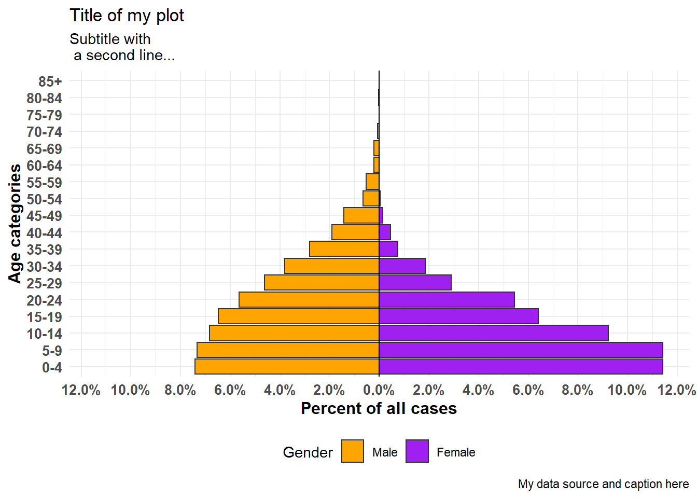
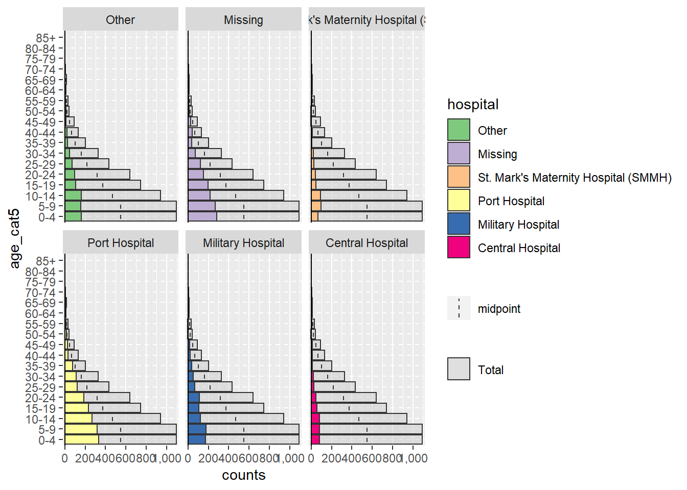
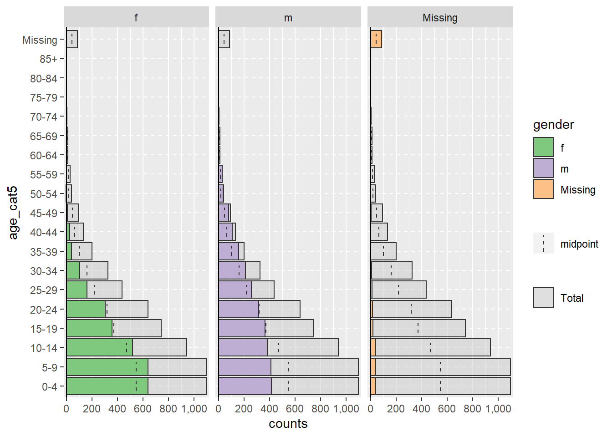
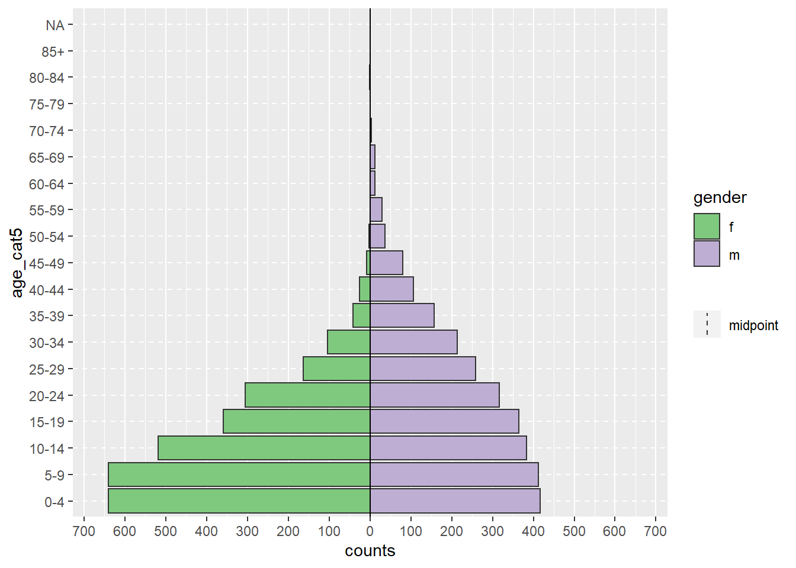
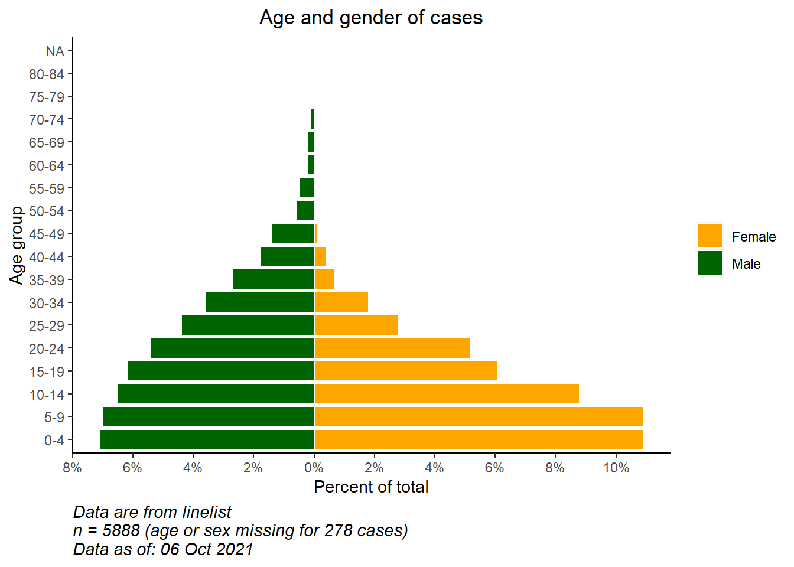
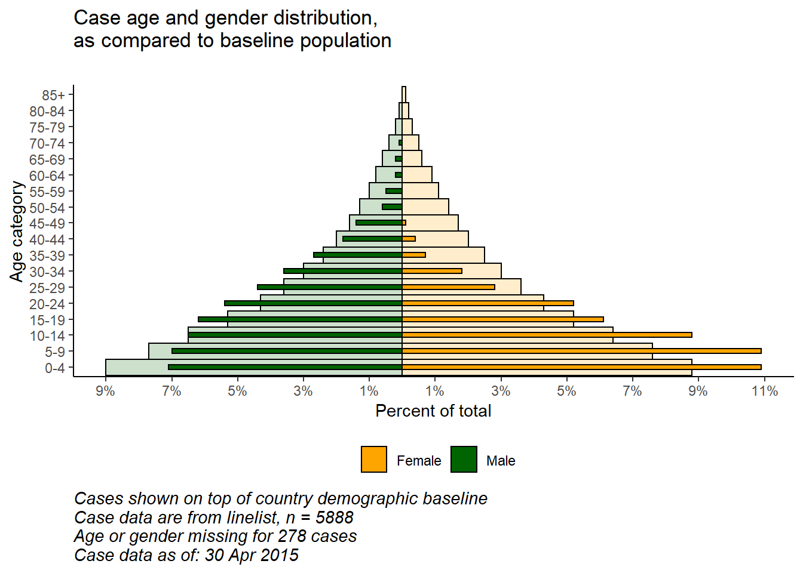
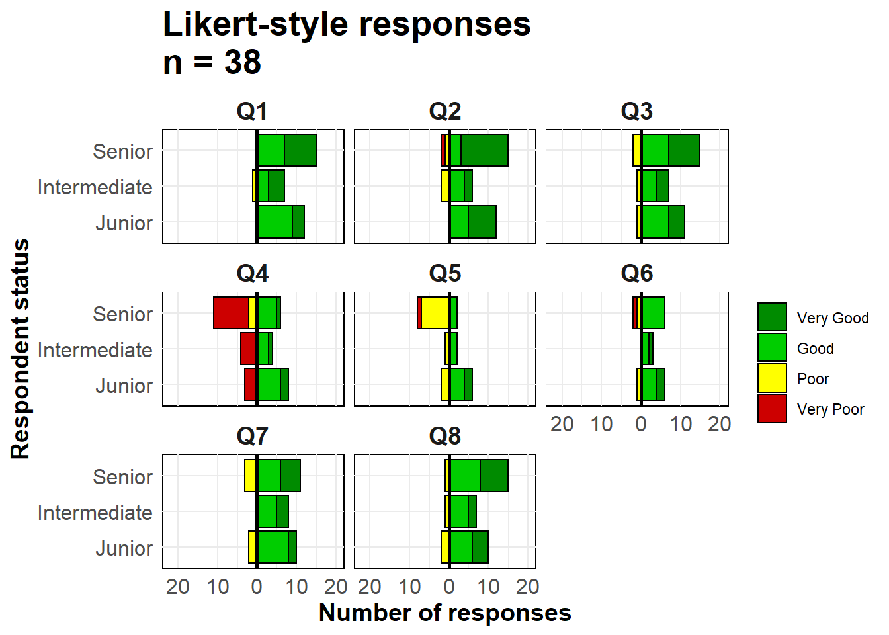

33 Tháp dân số và thang đo Likert


Kim tự tháp nhân khẩu học rất hữu ích khi bạn muốn hiển thị sự phân bố về độ tuổi và giới tính. Code tương tự cũng có thể được sử dụng để trực quan hóa kết quả của các câu hỏi khảo sát kiểu Likert (ví dụ: “Hoàn toàn đồng ý”, “Đồng ý”, “Trung lập”, “Không đồng ý”, “Hoàn toàn không đồng ý”). Trong chương này, chúng tôi đề cập đến những điều sau
- Tạo một tháp dân số nhanh & dễ dàng với package apyramid
- Tùy biến tháp dân số với
ggplot()
- Hiển thị dữ liệu nhân khẩu học “nền” trong tháp dân số
- Sử dụng các biểu đồ kiểu kim tự tháp để hiển thị các loại dữ liệu khác (ví dụ: câu trả lời cho các câu hỏi khảo sát kiểu Likert)
33.1 Chuẩn bị
Gọi package
Đoạn code này hiển thị việc gọi các package cần thiết cho các phân tích. Trong cuốn sách này, chúng tôi nhấn mạnh việc sử dụng hàm p_load() từ package pacman, giúp cài đặt các package cần thiết và gọi chúng ra để sử dụng. Bạn cũng có thể gọi các packages đã cài đặt với hàm library() của base R. Xem thêm chương R cơ bản để có thêm thông tin về các packages trong R.
Nhập dữ liệu
Để bắt đầu, chúng ta nhập bộ dữ liệu có tên linelist đã làm sạch bao gồm các trường hợp từ vụ dịch Ebola mô phỏng. Để tiện theo dõi, bấm để tải dữ liệu linelist “đã được làm sạch” (dưới dạng tệp .rds). Nhập dữ liệu bằng hàm import() từ package rio (nó xử lý nhiều loại tệp như .xlsx, .csv, .rds - xem thêm chương Nhập xuất dữ liệu để biết thêm chi tiết.
50 hàng đầu tiên của bộ dữ liệu được hiển thị như bên dưới.
Làm sạch
Để tạo tháp nhân khẩu học theo độ tuổi/giới tính truyền thống, trước tiên dữ liệu phải được làm sạch theo những cách sau:
- Cột gender phải được làm sạch.
- Tùy thuộc vào phương pháp của bạn, độ tuổi phải được lưu trữ dưới dạng số hoặc trong cột age category.
Nếu sử dụng nhóm tuổi, các giá trị trong cột phải được sắp xếp thứ tự, hoặc là thứ tự chữ-số mặc định hoặc được đặt có chủ ý bằng cách chuyển đổi thành kiểu factor.
Sau đây chúng ta sử dụng hàm tabyl() từ package janitor để khảo sát hai cột gender và age_cat5.
## age_cat5 f m NA_
## 0-4 640 416 39
## 5-9 641 412 42
## 10-14 518 383 40
## 15-19 359 364 20
## 20-24 305 316 17
## 25-29 163 259 13
## 30-34 104 213 9
## 35-39 42 157 3
## 40-44 25 107 1
## 45-49 8 80 5
## 50-54 2 37 1
## 55-59 0 30 0
## 60-64 0 12 0
## 65-69 0 12 1
## 70-74 0 4 0
## 75-79 0 0 1
## 80-84 0 1 0
## 85+ 0 0 0
## <NA> 0 0 86Chúng ta có thể vẽ biểu đồ histogram đối với cột age để chắc chắn rằng nó đã được làm sạch và phân loại chính xác:

33.2 apyramid package
Package apyramid là một sản phẩm của dự án R4Epis. Bạn có thể đọc thêm về package này tại đây. Nó cho phép bạn nhanh chóng tạo một tháp tuổi. Để tùy biến đẹp hơn, xem mục sử dụng ggplot(). Bạn có thể đọc thêm về package apyramid tại trang Help bằng cách nhập ?age_pyramid vào R console.
Dữ liệu Linelist
Sử dụng dữ liệu linelist đã làm sạch, chúng ta có thể tạo một tháp tuổi chỉ với một lệnh age_pyramid() cơ bản. Trong lệnh này:
- Đối số
data =sử dụng bộ dữ liệulinelist
- Đối số
age_group =(trục y) lấy thông tin từ cột nhóm tuổi (trong ngoặc kép)
- Đối số
split_by =(trục x) lấy thông tin từ cột giới

Tháp có thể hiện thị phần trăm của tất cả các trường hợp trên trục x, thay vì chỉ số lượng, bằng cách thêm proportional = TRUE.
apyramid::age_pyramid(data = linelist,
age_group = "age_cat5",
split_by = "gender",
proportional = TRUE)
Khi sử dụng package agepyramid, nếu cột được phân chia split_by là nhị phân (vd. nam/nữ, hoặc có/không), thì kết quả sẽ xuất hiện dưới dạng một kim tự tháp. Tuy nhiên nếu có nhiều hơn hai giá trị trong cột được phân chia split_by (không bao gồm NA), kim tự tháp sẽ xuất hiện dưới dạng nhiều biểu đồ cột ngang với các thanh màu xám trong “background” cho biết phạm vi của dữ liệu không có mặt cho nhóm tuổi đó. Trong trường hợp này, giá trị của split_by = sẽ xuất hiện dưới dạng nhãn ở đỉnh mỗi biểu đồ. Chẳng hạn, bên dưới là những gì xảy ra nếu split_by = được chỉ định tới cột hospital.

Giá trị Missing
Các hàng chứa giá trị missing NA của các cột split_by = hoặc age_group =, nếu được mã hóa là NA, sẽ không tự động kích hoạt việc phân chia biểu đồ như được hiển thị ở trên. Mặc định những hàng này không được hiển thị. Tuy nhiên, bạn có thể chỉ định các giá trị missing hiển thị, trong một biểu đồ liền kề và dưới dạng một nhóm tuổi riêng biệt, bằng cách chỉ định na.rm = FALSE.
apyramid::age_pyramid(data = linelist,
age_group = "age_cat5",
split_by = "gender",
na.rm = FALSE) # show patients missing age or gender
Tỷ lệ, màu sắc, & thẩm mỹ
Theo mặc định, các cột hiển thị số lượng (không phải %), đường gạch ngang giữa cho mỗi nhóm được hiển thị và màu sắc là xanh lục/tím. Các thông số này có thể được điều chỉnh, như được trình bày dưới đây:
Bạn cũng có thể thêm các lệnh ggplot() vào biểu đồ bằng cách sử dụng các cú pháp chuẩn của ggplot() “+” , chẳng hạn như chủ đề trang trí và điều chỉnh nhãn:
apyramid::age_pyramid(
data = linelist,
age_group = "age_cat5",
split_by = "gender",
proportional = TRUE, # show percents, not counts
show_midpoint = FALSE, # remove bar mid-point line
#pal = c("orange", "purple") # can specify alt. colors here (but not labels)
)+
# additional ggplot commands
theme_minimal()+ # simplfy background
scale_fill_manual( # specify colors AND labels
values = c("orange", "purple"),
labels = c("m" = "Male", "f" = "Female"))+
labs(y = "Percent of all cases", # note x and y labs are switched
x = "Age categories",
fill = "Gender",
caption = "My data source and caption here",
title = "Title of my plot",
subtitle = "Subtitle with \n a second line...")+
theme(
legend.position = "bottom", # legend to bottom
axis.text = element_text(size = 10, face = "bold"), # fonts/sizes
axis.title = element_text(size = 12, face = "bold"))
Dữ liệu được tổng hợp
Ví dụ bên trên giả định rằng dữ liệu của bạn có định dạng mỗi hàng cho một quan sát. Nếu dữ liệu của bạn đã được tổng hợp thành số lượng theo nhóm tuổi, bạn vẫn có thể sử dụng package apyramid, như được trình bày dưới đây.
Để minh họa, chúng ta sẽ tổng hợp dữ liệu linelist theo số lượng đối với nhóm tuổi và giới, dưới định dạng “ngang”. Việc này sẽ mô phỏng như thể dữ liệu ban đầu của bạn đang được trình bày dưới dạng số lượng. Tìm hiểu thêm về Nhóm dữ liệu và Xoay trục dữ liệu ở các chương tương ứng.
demo_agg <- linelist %>%
count(age_cat5, gender, name = "cases") %>%
pivot_wider(
id_cols = age_cat5,
names_from = gender,
values_from = cases) %>%
rename(`missing_gender` = `NA`)…lệnh trên sẽ khiến bộ dữ liệu trông như thế này: bao gồm các cột nhóm tuổi, số lượng nam, nữ, và missing.
Để thiết lập chủ đề cho tháp tuổi, chúng ta sẽ xoay trục dữ liệu sang dạng “dọc” bằng hàm pivot_longer() trong package dplyr. Đó là bởi vì ggplot() thường thích dữ liệu được bố trí ở dạng “dọc”, và package apyramid đang sử dụng ggplot().
# pivot the aggregated data into long format
demo_agg_long <- demo_agg %>%
pivot_longer(
col = c(f, m, missing_gender), # cols to elongate
names_to = "gender", # name for new col of categories
values_to = "counts") %>% # name for new col of counts
mutate(
gender = na_if(gender, "missing_gender")) # convert "missing_gender" to NASau đó sử dụng các đối số split_by = và count = của hàm age_pyramid() để chỉ định các cột tương ứng trong bộ dữ liệu:
apyramid::age_pyramid(data = demo_agg_long,
age_group = "age_cat5",# column name for age category
split_by = "gender", # column name for gender
count = "counts") # column name for case counts
Lưu ý rằng ở trên, thứ tự của “m” và “f” là khác nhau (tháp bị đảo ngược). Để điều chỉnh thự tự, bạn phải định nghĩa lại cột giới trong dữ liệu được tổng hợp thành kiểu Factor và sắp xếp thứ tự như mong muốn. Xem chương Factors.
33.3 ggplot()
Sử dụng ggplot() cho phép bạn xây dựng tháp tuổi một cách linh hoạt hơn, nhưng đòi hỏi nhiều nỗ lực và hiểu biết hơn về cách hoạt động của ggplot(). Việc vô tình mắc sai lầm cũng dễ dàng hơn.
Để sử dụng ggplot() tạo tháp nhân khẩu học, bạn tạo hai biểu đồ cột (cho từng giới tính), chuyển đổi các giá trị trong một biểu đồ thành âm và cuối cùng lật các trục x và y để hiển thị các biểu đồ cột theo chiều dọc, xuất phát điểm của chúng gặp nhau ở chính giữa biểu đồ.
Chuẩn bị
Cách tiếp cận này sử dụng cột tuổi ở dạng numeric, không phải cột nhóm tuổi age_cat5 dạng categorical. Vì vậy, chúng ta cần kiểm tra để đảm bảo rằng kiểu của cột này thực sự là dạng số.
## [1] "numeric"Bạn có thể sử dụng logic tương tự như dưới đây để xây dựng một kim tự tháp từ dữ liệu dạng danh mục sử dụng geom_col() thay vì geom_histogram().
Xây dựng biểu đồ
Trước tiên, hãy hiểu rằng để tạo một kim tự tháp như vậy bằng cách sử dụng ggplot(), cách tiếp cận sẽ là như sau:
Bên trong hàm
ggplot(), tạo hai biểu đồ histograms sử dụng cột tuổi dạng numeric, tương ứng cho hai nhóm (trong trường hợp này là giới nam và nữ). Để thực hiện việc này, dữ liệu cho mỗi biểu đồ được chỉ định trong các lệnhgeom_histogram()tương ứng của chúng, với các bộ lọc tương ứng được áp dụng cho bộ dữ liệulinelist.Một biểu đồ sẽ có các giá trị dương, trong khi biểu đồ kia sẽ có các giá trị được chuyển thành giá trị âm - điều này tạo ra “kim tự tháp” với giá trị
0ở giữa biểu đồ. Các giá trị âm được tạo bằng cách sử dụng thuật ngữ đặc biệt của ggplot2 là..count..và nhân với -1.Lệnh
coord_flip()chuyển trục X và Y, dẫn đến các đồ thị quay dọc và tạo ra hình kim tự tháp.Cuối cùng, các nhãn giá trị trục đếm phải được thay đổi để chúng xuất hiện dưới dạng số “dương” trên cả hai mặt của kim tự tháp (mặc dù các giá trị thực tế ở một mặt là âm).
Một phiên bản đơn giản của biểu đồ, sử dụng hàm geom_histogram(), như dưới đây:
# begin ggplot
ggplot(mapping = aes(x = age, fill = gender)) +
# female histogram
geom_histogram(data = linelist %>% filter(gender == "f"),
breaks = seq(0,85,5),
colour = "white") +
# male histogram (values converted to negative)
geom_histogram(data = linelist %>% filter(gender == "m"),
breaks = seq(0,85,5),
mapping = aes(y = ..count..*(-1)),
colour = "white") +
# flip the X and Y axes
coord_flip() +
# adjust counts-axis scale
scale_y_continuous(limits = c(-600, 900),
breaks = seq(-600,900,100),
labels = abs(seq(-600, 900, 100)))
NGUY HIỂM: Nếu như giới hạn của trục counts được thiết lập quá nhỏ, và cột số lượng vượt quá giá trị đó, cột sẽ biến mất hoàn toàn hoặc bị rút ngắn một cách không tự nhiên! Hãy chú ý điều này nếu dữ liệu phân tích thường xuyên được cập nhật. Có thể ngăn chặn điều này bằng cách tự động điều chỉnh các giới hạn trục count cho phù hợp với dữ liệu của bạn, như dưới đây.
Có nhiều thứ bạn có thể thay đổi/thêm vào phiên bản đơn giản này, bao gồm:
- Tự động điều chỉnh tỷ lệ trục count cho dữ liệu của bạn (tránh các lỗi được thảo luận trong cảnh báo bên dưới)
- Chỉ định màu sắc và nhãn chú giải một cách thủ công
Chuyển đổi số lượng thành tỷ lệ phần trăm
Để chuyển đổi số lượng thành phần trăm (của tổng số), hãy thực hiện điều này với dữ liệu của bạn trước khi vẽ biểu đồ. Dưới đây, chúng ta lấy số lượng của age-gender, sau đó ungroup(), và tiếp tục mutate() để tạo cột phần trăm mới. Nếu bạn muốn phần trăm theo giới tính, hãy bỏ qua bước hủy nhóm.
# create dataset with proportion of total
pyramid_data <- linelist %>%
count(age_cat5,
gender,
name = "counts") %>%
ungroup() %>% # ungroup so percents are not by group
mutate(percent = round(100*(counts / sum(counts, na.rm=T)), digits = 1),
percent = case_when(
gender == "f" ~ percent,
gender == "m" ~ -percent, # convert male to negative
TRUE ~ NA_real_)) # NA val must by numeric as wellQuan trọng là, chúng ta lưu các giá trị lớn nhất vầ nhỏ nhất để chúng ta biết giới hạn của thang đo. Chúng sẽ được sử dụng trong lệnh ggplot() dưới đây.
## [1] 10.9## [1] -7.1Cuối cùng, chúng ta dùng hàm ggplot() trên dữ liệu phần trăm. Chúng ta chỉ rõ scale_y_continuous() để mở rộng độ dài được xác định trước theo mỗi hướng (dương và “âm”). Chúng ta sử dụng hàm floor() vả ceiling() để làm tròn số thập phân theo cách thích hợp (làm tròn xuống hoặc lên).
# begin ggplot
ggplot()+ # default x-axis is age in years;
# case data graph
geom_col(data = pyramid_data,
mapping = aes(
x = age_cat5,
y = percent,
fill = gender),
colour = "white")+ # white around each bar
# flip the X and Y axes to make pyramid vertical
coord_flip()+
# adjust the axes scales
# scale_x_continuous(breaks = seq(0,100,5), labels = seq(0,100,5)) +
scale_y_continuous(
limits = c(min_per, max_per),
breaks = seq(from = floor(min_per), # sequence of values, by 2s
to = ceiling(max_per),
by = 2),
labels = paste0(abs(seq(from = floor(min_per), # sequence of absolute values, by 2s, with "%"
to = ceiling(max_per),
by = 2)),
"%"))+
# designate colors and legend labels manually
scale_fill_manual(
values = c("f" = "orange",
"m" = "darkgreen"),
labels = c("Female", "Male")) +
# label values (remember X and Y flipped now)
labs(
title = "Age and gender of cases",
x = "Age group",
y = "Percent of total",
fill = NULL,
caption = stringr::str_glue("Data are from linelist \nn = {nrow(linelist)} (age or sex missing for {sum(is.na(linelist$gender) | is.na(linelist$age_years))} cases) \nData as of: {format(Sys.Date(), '%d %b %Y')}")) +
# display themes
theme(
panel.grid.major = element_blank(),
panel.grid.minor = element_blank(),
panel.background = element_blank(),
axis.line = element_line(colour = "black"),
plot.title = element_text(hjust = 0.5),
plot.caption = element_text(hjust=0, size=11, face = "italic")
)So sánh với đường cơ sở
With the flexibility of ggplot(), you can have a second layer of bars in the background that represent the “true” or “baseline” population pyramid. This can provide a nice visualization to compare the observed with the baseline.
Với sự linh hoạt của ggplot(), bạn có thể có lớp thanh thứ hai trong nền đại diện cho tháp dân số “chuẩn” hoặc “đường cơ sở”. Điều này có thể cung cấp khả năng trực quan hóa tốt để so sánh những gì quan sát được với đường cơ sở.
Nhập và xem dữ liệu dân số (xem chương Tải sách và dữ liệu):
Đầu tiên là một số bước quản lý dữ liệu:
Ở đây chúng ta sắp xếp lại thứ tự của các danh mục tuổi mà chúng ta muốn chúng xuất hiện. Do một số điểm khác biệt trong cách thực thi ggplot(), trong trường hợp cụ thể này, dễ dàng nhất là lưu trữ chúng dưới dạng vectơ ký tự và sử dụng chúng sau này trong hàm vẽ đồ thị.
# record correct age cat levels
age_levels <- c("0-4","5-9", "10-14", "15-19", "20-24",
"25-29","30-34", "35-39", "40-44", "45-49",
"50-54", "55-59", "60-64", "65-69", "70-74",
"75-79", "80-84", "85+")Kết hợp dữ liệu quần thể và dữ liệu trường hợp thông qua hàm bind_rows() của package dplyr:
- Trước tiên, hãy đảm bảo hai bộ dữ liệu có tên cột giống nhau, các giá trị nhóm tuổi và giá trị giới tính
- Làm cho chúng có cấu trúc dữ liệu giống nhau: cột nhóm tuổi, giới tính, số lượng và phần trăm tổng số
- Gắn chúng lại với nhau, một bộ dữ liệu này ở trên bộ dữ liệu kia (
bind_rows())
# create/transform populaton data, with percent of total
########################################################
pop_data <- pop %>%
pivot_longer( # pivot gender columns longer
cols = c(m, f),
names_to = "gender",
values_to = "counts") %>%
mutate(
percent = round(100*(counts / sum(counts, na.rm=T)),1), # % of total
percent = case_when(
gender == "f" ~ percent,
gender == "m" ~ -percent, # if male, convert % to negative
TRUE ~ NA_real_))Xem lại bộ dữ liệu dân số đã thay đổi
Bây giờ thực hiện tương tự cho bộ linelist. Sẽ hơi khác một chút bởi vì nó bắt đầu với các trường hợp theo hàng, không phải số lượng.
# create case data by age/gender, with percent of total
#######################################################
case_data <- linelist %>%
count(age_cat5, gender, name = "counts") %>% # counts by age-gender groups
ungroup() %>%
mutate(
percent = round(100*(counts / sum(counts, na.rm=T)),1), # calculate % of total for age-gender groups
percent = case_when( # convert % to negative if male
gender == "f" ~ percent,
gender == "m" ~ -percent,
TRUE ~ NA_real_))Xem lại bộ dữ liệu trường hợp đã thay đổi
Bây giờ hai data frame sẽ được kết hợp, cái này ở trên cái kia (chúng có cùng tên cột). Chúng ta có thể “đặt tên” cho từng data frame, và sử dụng đối số .id = để tạo một cột mới “data_source” sẽ cho biết dữ liệu có nguồn gốc từ data frame nào. Chúng tôi có thể sử dụng cột này để lọc với hàm ggplot().
# combine case and population data (same column names, age_cat values, and gender values)
pyramid_data <- bind_rows("cases" = case_data, "population" = pop_data, .id = "data_source")Lưu trữ các giá trị phần trăm tối đa và tối thiểu, được sử dụng trong hàm vẽ biểu đồ để xác định phạm vi của biểu đồ (và không cắt ngắn bất kỳ cột nào!)
# Define extent of percent axis, used for plot limits
max_per <- max(pyramid_data$percent, na.rm=T)
min_per <- min(pyramid_data$percent, na.rm=T)Bây giờ biểu đồ được tạo bởi ggplot() có:
- Một biểu đồ cột ngang của dữ liệu dan số (rộng hơn, trong suốt)
- Một biểu đồ cột ngang của dữ liệu các trường hợp (nhỏ hơn, đậm hơn)
# begin ggplot
##############
ggplot()+ # default x-axis is age in years;
# population data graph
geom_col(
data = pyramid_data %>% filter(data_source == "population"),
mapping = aes(
x = age_cat5,
y = percent,
fill = gender),
colour = "black", # black color around bars
alpha = 0.2, # more transparent
width = 1)+ # full width
# case data graph
geom_col(
data = pyramid_data %>% filter(data_source == "cases"),
mapping = aes(
x = age_cat5, # age categories as original X axis
y = percent, # % as original Y-axis
fill = gender), # fill of bars by gender
colour = "black", # black color around bars
alpha = 1, # not transparent
width = 0.3)+ # half width
# flip the X and Y axes to make pyramid vertical
coord_flip()+
# manually ensure that age-axis is ordered correctly
scale_x_discrete(limits = age_levels)+ # defined in chunk above
# set percent-axis
scale_y_continuous(
limits = c(min_per, max_per), # min and max defined above
breaks = seq(floor(min_per), ceiling(max_per), by = 2), # from min% to max% by 2
labels = paste0( # for the labels, paste together...
abs(seq(floor(min_per), ceiling(max_per), by = 2)), "%"))+
# designate colors and legend labels manually
scale_fill_manual(
values = c("f" = "orange", # assign colors to values in the data
"m" = "darkgreen"),
labels = c("f" = "Female",
"m"= "Male"), # change labels that appear in legend, note order
) +
# plot labels, titles, caption
labs(
title = "Case age and gender distribution,\nas compared to baseline population",
subtitle = "",
x = "Age category",
y = "Percent of total",
fill = NULL,
caption = stringr::str_glue("Cases shown on top of country demographic baseline\nCase data are from linelist, n = {nrow(linelist)}\nAge or gender missing for {sum(is.na(linelist$gender) | is.na(linelist$age_years))} cases\nCase data as of: {format(max(linelist$date_onset, na.rm=T), '%d %b %Y')}")) +
# optional aesthetic themes
theme(
legend.position = "bottom", # move legend to bottom
panel.grid.major = element_blank(),
panel.grid.minor = element_blank(),
panel.background = element_blank(),
axis.line = element_line(colour = "black"),
plot.title = element_text(hjust = 0),
plot.caption = element_text(hjust=0, size=11, face = "italic"))
33.4 Thang đo Likert
Các kỹ thuật được sử dụng để tạo tháp dân số với ggplot() cũng có thể được sử dụng để lập các biểu đồ của dữ liệu khảo sát từ thang đo Likert.
Nhập dữ liệu (xem chương Tải sách và dữ liệu nếu cần).
Bắt đầu với dữ liệu giống như sau, với một biến phân loại từng người trả lời (status) và câu trả lời của họ cho 8 câu hỏi trên thang điểm Likert 4 mức độ (“Rất kém”, “Kém”, “Tốt”, “Rất tốt”).
Đầu tiên là một vài bước quản lý số liệu:
- Xoay trục dữ liệu dài hơn
- Tạo cột mới
directiontùy thuộc vào việc phản hồi “tích cực” hay “tiêu cực” - Thiết lập thứ bậc kiểu factor cho cột
statusvà cộtResponse
- Lưu trữ giá trị đếm tối đa để các giới hạn của biểu đồ là phù hợp
melted <- likert_data %>%
pivot_longer(
cols = Q1:Q8,
names_to = "Question",
values_to = "Response") %>%
mutate(
direction = case_when(
Response %in% c("Poor","Very Poor") ~ "Negative",
Response %in% c("Good", "Very Good") ~ "Positive",
TRUE ~ "Unknown"),
status = fct_relevel(status, "Junior", "Intermediate", "Senior"),
# must reverse 'Very Poor' and 'Poor' for ordering to work
Response = fct_relevel(Response, "Very Good", "Good", "Very Poor", "Poor"))
# get largest value for scale limits
melted_max <- melted %>%
count(status, Question) %>% # get counts
pull(n) %>% # column 'n'
max(na.rm=T) # get maxBây giờ hãy cùng vẽ biểu đồ. Tương tự các tháp tuổi ở trên, chúng ta đang tạo hai biểu đồ thanh và đảo các giá trị của một trong số chúng thành âm.
Chúng ta sử dụng hàm geom_bar() bởi vì dữ liệu của chúng ta mỗi quan sát nằm trên một hàng, không phải là số lượng tổng hợp. Chúng ta sử dụng thuật ngữ đặc biệt của ggplot2 là ..count.. ở một biểu đồ thanh để đảo ngược các giá trị thành âm(*-1), sau đó chúng ta thiết lập position = "stack" để các giá trị xếp chồng lên nhau.
# make plot
ggplot()+
# bar graph of the "negative" responses
geom_bar(
data = melted %>% filter(direction == "Negative"),
mapping = aes(
x = status,
y = ..count..*(-1), # counts inverted to negative
fill = Response),
color = "black",
closed = "left",
position = "stack")+
# bar graph of the "positive responses
geom_bar(
data = melted %>% filter(direction == "Positive"),
mapping = aes(
x = status,
fill = Response),
colour = "black",
closed = "left",
position = "stack")+
# flip the X and Y axes
coord_flip()+
# Black vertical line at 0
geom_hline(yintercept = 0, color = "black", size=1)+
# convert labels to all positive numbers
scale_y_continuous(
# limits of the x-axis scale
limits = c(-ceiling(melted_max/10)*11, # seq from neg to pos by 10, edges rounded outward to nearest 5
ceiling(melted_max/10)*10),
# values of the x-axis scale
breaks = seq(from = -ceiling(melted_max/10)*10,
to = ceiling(melted_max/10)*10,
by = 10),
# labels of the x-axis scale
labels = abs(unique(c(seq(-ceiling(melted_max/10)*10, 0, 10),
seq(0, ceiling(melted_max/10)*10, 10))))) +
# color scales manually assigned
scale_fill_manual(
values = c("Very Good" = "green4", # assigns colors
"Good" = "green3",
"Poor" = "yellow",
"Very Poor" = "red3"),
breaks = c("Very Good", "Good", "Poor", "Very Poor"))+ # orders the legend
# facet the entire plot so each question is a sub-plot
facet_wrap( ~ Question, ncol = 3)+
# labels, titles, caption
labs(
title = str_glue("Likert-style responses\nn = {nrow(likert_data)}"),
x = "Respondent status",
y = "Number of responses",
fill = "")+
# display adjustments
theme_minimal()+
theme(axis.text = element_text(size = 12),
axis.title = element_text(size = 14, face = "bold"),
strip.text = element_text(size = 14, face = "bold"), # facet sub-titles
plot.title = element_text(size = 20, face = "bold"),
panel.background = element_rect(fill = NA, color = "black")) # black box around each facet